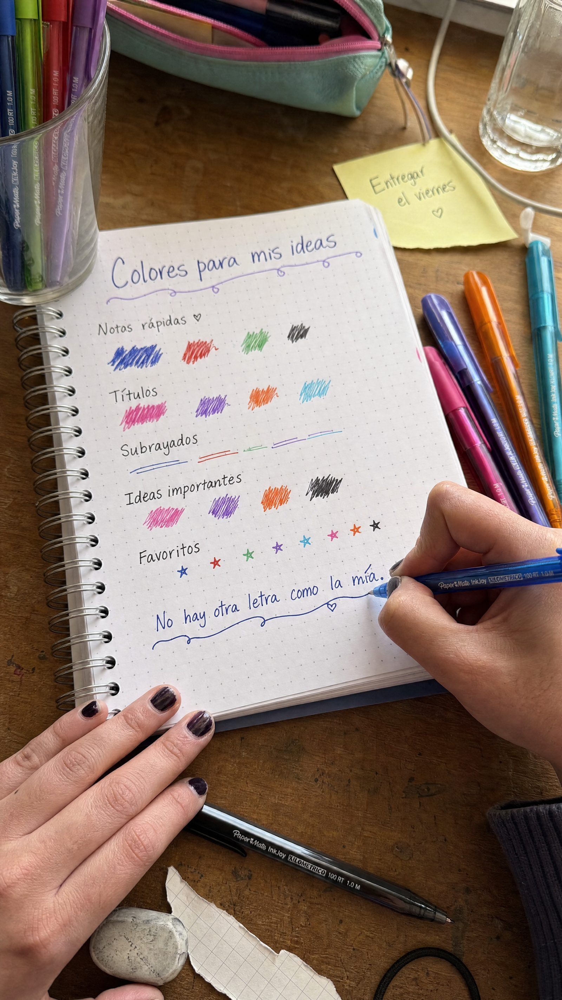

Esta es nuestra propuesta del camino para producir el video y la fotografía del proyecto: una ruta de creación híbrida que toma lo mejor de los dos mundos, con pruebas reales del mood al que podemos llegar.

El territorio ya está claro: la alegría de hacerlo a mano. Esta es nuestra propuesta para llevarlo a video y fotografía — una ruta de creación híbrida. Creamos videos e imágenes de referencia para mostrar, sobre todo, el mood al que podemos llegar. Con este ejemplo vemos una ruta muy clara para el proyecto.
Toda la pieza nace en producción tradicional: la realidad de cómo una mano escribe con un bolígrafo de verdad, cómo sale la tinta, cómo fluye el trazo. Luego entra la IA — para ambientar escenarios, iluminar y sumar la magia de Saúl. Así tenemos la verdad del producto y, a la vez, miles de mundos imposibles de lograr en producción tradicional.
Lo que se escribe, se escribe de verdad. Manos reales, distintas letras, bolígrafo real, tinta real. Aquí está la verdad que ninguna IA inventa: cómo escribe el producto y cómo se siente el trazo.
Sobre lo real, la IA construye el mundo: ilumina, ambienta el escenario, da acabado cinematográfico y trae a Saúl. Nos permite generar miles de situaciones y escenarios que en producción tradicional serían lentos o imposibles.
El orden importa: primero la realidad, después la magia. Todo lo que está escrito será real; luego se pasa por IA para potenciar la visual del escenario, la iluminación y el mundo.
Producción real: distintas manos escriben de verdad con bolígrafo Paper Mate. Letra, tinta y trazo auténticos.
La realidad de cómo escribe: cómo sale la tinta, la suavidad, la precisión de la punta, el color sobre el papel.
Sobre lo real se construye el escenario: luz, set, mundo y acabado cinematográfico imposibles a mano.
La capa imaginativa: Saúl y su universo aparecen como la magia que conecta el trazo real con lo animado.
Color grading, consistencia de producto y de marca, retoque final. La realidad se queda; el mundo se eleva.
Tres pruebas en video (9:16) para mostrar el tono, el ritmo y la naturalidad a la que apuntamos. Enfocadas en el mood, no en la perfección final del producto.
Toca play para reproducir cada prueba con sonido.
Una selección de pruebas de imagen: lo natural y espontáneo de la escritura a mano, ambientado con IA. Así se vería el universo visual de la campaña.
Estos ejemplos están enfocados en mostrar el mood — la naturalidad y la realidad a la que podemos llegar — más no en lograr la perfección de los productos. Eso es un proceso más largo y de detalle.
Algunos productos aún no quedaron 100% fieles al producto real de Paper Mate; eso es totalmente corregible, tanto en imagen como en video. Lo que queremos mostrar aquí es el mood natural y espontáneo.
Y lo más importante: en la producción real, todo lo que está escrito será real — mano, bolígrafo y tinta auténticos. Solo después se pasa por IA para potenciar la visual del escenario, la iluminación y el mundo. Lo mejor de los dos mundos.
La realidad del producto y de la letra hecha a mano, sumada a un universo generado con IA: escenarios infinitos, iluminación de cine y la magia de Saúl. Es la forma de hacer la campaña real, escalable y fiel al territorio.